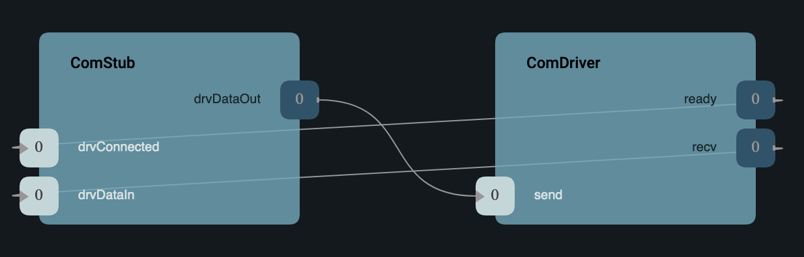

|
F´ Flight Software - C/C++ Documentation
Latest
A framework for building embedded system applications to NASA flight quality standards.
|
|
F´ Flight Software - C/C++ Documentation
Latest
A framework for building embedded system applications to NASA flight quality standards.
|
Svc::ComStub is an example F´ component implementing the communication adapter interface required to work with F´ communication components. Projects and users may choose to replace this with a complete communication implementation (i.e. a component managing a specific radio) once ready. As long as any communication implementation implements the communication adapter interface it can drop in and work with the standard F´ uplink and downlink setup.
Svc::ComStub delegates to a Drv.ByteStreamDriver in order to send and receive data through the driver interface.
Using Svc::ComStub assumes that the driver layer (e.g. Drv::TcpClient) provides all capability needed to establish communications. For example, a project can communicate over raw tcp rather than requiring additional protocol on top of tcp.
| Requirement | Description | Rationale | Verification Method |
|---|---|---|---|
| SVC-COMSTUB-001 | Svc::ComStub shall accept Fw::Buffer for transmission and pass them to a Drv::ByteStreamSend port | The comm interface must send Fw::Buffers through a driver | Unit Test |
| SVC-COMSTUB-002 | Svc::ComStub shall send a Fw::Success:SUCCESS signal via an Fw.SuccessCondition port on Drv::ByteStreamSend success | Successful sends must notify any attached Svc::ComQueue | Unit Test |
| SVC-COMSTUB-003 | Svc::ComStub shall send a Fw::Success:FAILURE signal via an Fw.SuccessCondition port on Drv::ByteStreamSend failure | Failed sends must notify any attached Svc::ComQueue | Unit Test |
| SVC-COMSTUB-004 | Svc::ComStub shall retry sending to Drv::ByteStreamSend on Drv::ByteStreamSend retry | Sends indicating RETRY should be retried. | Unit Test |
| SVC-COMSTUB-005 | Svc::ComStub shall pass-through Fw::Buffer from a Drv::ByteStreamRead on Drv::ByteStreamSend success | A Comm interface must receive Fw::Buffers from a driver | Unit Test |
The diagram below shows the Svc::ComStub port interface. Svc::ComStub is a basic Communication Adapter and can be used alongside the other F´ communication components (Svc::Framer, Svc::Deframer, Svc::ComQueue).
Svc::ComStub Uplink and Downlink Interface

Svc::ComStub implements the communication adapter interface by delegation to a Drv::ByteStreamDriverModel as a way to transmit data and receive data. Other communication adapter implementations may follow-suite.

ComStub has the following ports. The first three ports are required for the communication adapter interface, the second three are because the implementation delegates to a Drv.ByteStreamDriverModel. Only the communication adapter interfaces ports are required for replacements to Svc::ComStub, however; a Drv.ByteStreamDriverModel ports may still be useful
Communication Adapter Interface Ports
| Kind | Name | Port Type | Usage |
|---|---|---|---|
sync input | comDataIn | Drv.ByteStreamSend | Port receiving Fw::Buffers for transmission out drvDataOut |
output | comStatus | Svc.ComStatus | Port indicating success or failure to attached Svc::ComQueue |
output | comDataOut | Drv.ByteStreamRecv | Port providing received Fw::Buffers to a potential Svc::Deframer |
Byte Stream Driver Model Ports
| Kind | Name | Port Type | Usage |
|---|---|---|---|
sync input | drvConnected | Drv.ByteStreamReady | Port called when the underlying driver has connected |
sync input | drvDataIn | Drv.ByteStreamRecv | Port receiving Fw::Buffers from underlying communications bus driver |
output | drvDataOut | Drv.ByteStreamSend | Port providing received Fw::Buffers to the underlying communications bus driver |
Svc::ComStub has only stores a boolean m_reinitialize indicating when it should send Fw::Success::SUCCESS in response to a driver reconnection event. This is to implement the Communication Adapter Protocol of a communication adapter interface.
The comDataIn port handler receives an Fw::Buffer from the F´ system for transmission to the ground. Typically, it is connected to the output of the Svc::Framer component. In this Svc::ComStub implementation, it passes this Fw::Buffer directly to the drvDataOut port. It will retry when that port responds with a RETRY request. Otherwise, the comStatus port will be invoked to indicate success or failure. Retries attempts are limited before the port asserts.
This port receives the connected signal from the driver and responds with exactly one READY invocation to the comStatus port. This starts downlink. This occurs each time the driver reconnects.
The drvDataIn handler receives data read from the driver and supplies it out the comDataOut port. It is usually connected to the Svc::Deframer component